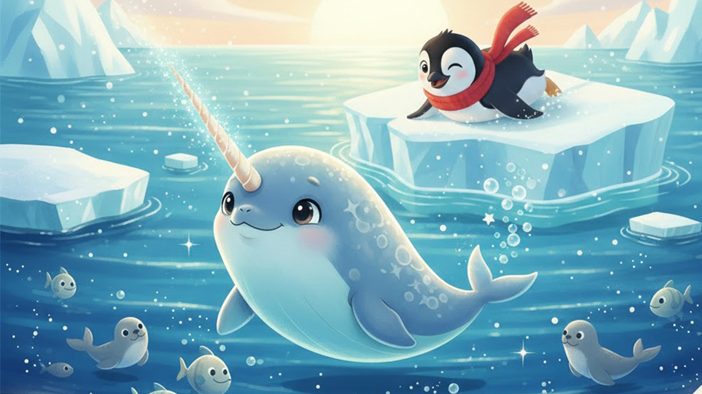

Once upon a time, in the chilly waters of the Arctic, three best friends lived near a big, sparkly iceberg.

One sunny morning, Nina drew a big star in the water with her tusk.
"Let's go on an adventure!" she said.
"Where to?" asked Pip, flapping his little wings.
"Let's find the Rainbow Ice Cave!" Sasha squealed. "It's supposed to sparkle with every color!"
Their Journey Began
So off they went — sliding, swimming, and splashing through the icy sea. They followed a trail of glittery fish, swam under floating ice bridges, and even played tag with a group of friendly puffins. Finally, they saw something glowing in the distance.
"It's the cave!" shouted Pip.
The Rainbow Ice Cave
Inside, the walls shimmered with reds, blues, greens, and purples. It was like swimming inside a rainbow! The friends danced, sang, and made echo sounds that bounced around the cave. Nina drew a heart with her tusk, and Sasha found a shell shaped like a star.
As the sun began to set, they swam back home, tired but happy.
"That was the best adventure ever," said Sasha.
"And tomorrow," said Nina, "we'll find the Moonlight Lagoon!"
The three friends snuggled together on the iceberg, dreaming of their next magical journey.